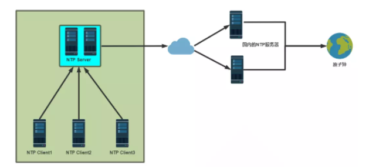
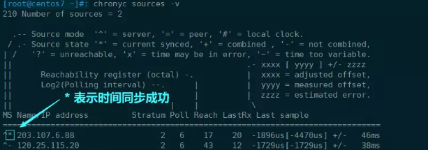

NTP时间同步
🏓19.2时间同步服务和SELinux安全管理
⛳关键问题：
why为什么需要时间同步？
详解： (105条消息) Linux系统时间同步方法小结_清晨一场梦的博客-CSDN博客_linux系统时间同步命令
系统的”时间同步”尤其是“加密服务”，时间不统一会导致证书过期，不能顺利的访问网站，由此可见，时间同步对系统产生会非常重要的影响。
Windows VS Linux 的时间同步
Windows的时间同步：开机时，从硬件BIOS时钟获取时间（Windows时间同步*软件时间 = 硬件时间），实现同步。
Linux 的时间同步 ：软硬件时间异步，且互不干扰，硬件时间来源：BIOS时钟；软件时间来源：CPU Tick。且开始时，系统时间 = 硬件时间。
what is NTP？
Network Time Protocol (NTP) ，网络同步时间协议，简单而言便是同步网络中各个计算机软硬件时间的协议。
安装命令
yum -y install ntp
所属配置文件
/etc/ntp.conf
NTP=时间同步服务器，其工作原理如下图所示：

♟how Linux中时间同步软件实现：
- ntp(旧版工具)
- chrony（精度更加准确）
具体实操如下所示：
1 | |
输入如下命令
chronyc sources -v
如下图所示，则时间同步成功

公共NTP服务：
- 阿里云公共NTP
- Linux:ntp:aliyun.com
- ntp1-7.aliyun.com
- 腾讯公共NTP
- time1-5.cloud.tencent.com
- 国家授时中心服务器：210.72.145.44
本博客所有文章除特别声明外，均采用 CC BY-SA 4.0 协议 ，转载请注明出处！